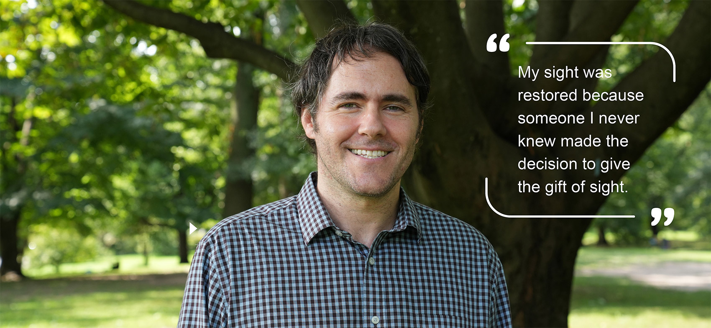
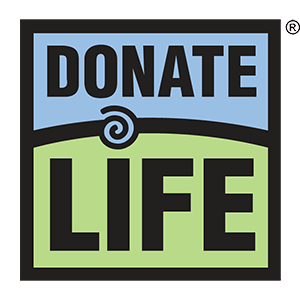
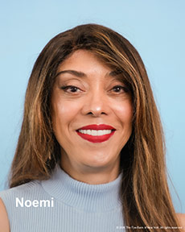
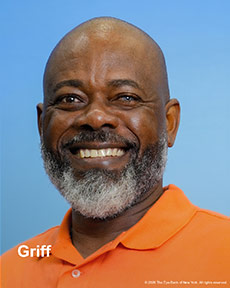
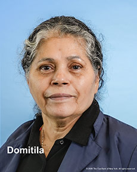
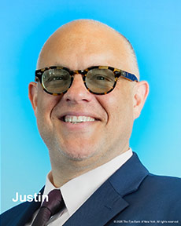
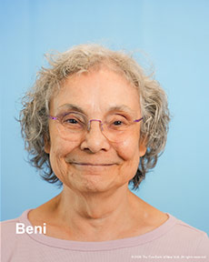
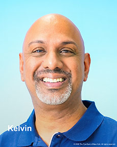

Adam Can
See Again.
Adam regained his sight thanks to a generous eye donor.
Not a day goes by where he doesn’t think about the gift he’s been given. A second chance to live his life.

Sign up todayto be a donor
Videos
Faces of Sight Restoration
In 2025, we launched a portrait project that features photos of local cornea transplant recipients. Part public education campaign, part historical documentation, Faces of Sight Restoration aims to visually showcase the impact of eye donation in our local community. These are real New Yorkers whose sight was restored with tissue provided by The Eye-Bank, thanks to the generous gifts of eye donors.





